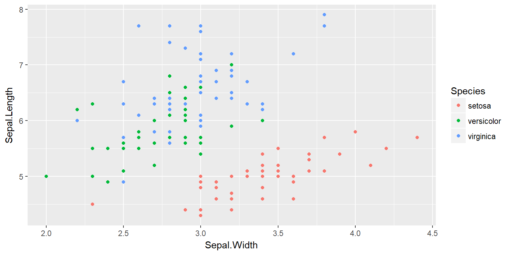

Firstly, Python is a valid way to go. There are number of really good libraries out there for number crunching etc. and it is a well written language with few “quirks”
Secondly, why R is my preference:
But… “production” code can be faster in Python
# Define a variable
a<-25
# Call a variable
a## [1] 25# Do something to it
a+1## [1] 26# Numeric
25## [1] 25# Character
"25"## [1] "25"# Logical
TRUE## [1] TRUE# Dates
as.Date("2015-08-05")## [1] "2015-08-05"as.POSIXct("2015-08-01")## [1] "2015-08-01 UTC"# Factor
as.numeric(factor("25"))## [1] 1as.character(factor("25"))## [1] "25"# Vector
a<-c(25, 30)
# Matrix
matrix(a)## [,1]
## [1,] 25
## [2,] 30# Data frame
data.frame(a,b=a/5,c=LETTERS[1:2])## a b c
## 1 25 5 A
## 2 30 6 B# List
list(vector=a, matrix=matrix(a))## $vector
## [1] 25 30
##
## $matrix
## [,1]
## [1,] 25
## [2,] 30a <- sample(1:20, size = 5, replace = TRUE) # setup
a # visual check## [1] 1 13 9 4 4a[1:2] # row numbers## [1] 1 13a[a<=10] # value filters## [1] 1 9 4 4df <- data.frame(a=1:10, b = LETTERS[1:5]) # setup
df[1:2,] # row numbers## a b
## 1 1 A
## 2 2 Bdf[df$a<2,] # value filters## a b
## 1 1 Adf[df$a<3,1] # column filter## [1] 1 2df[df$a<3,1, drop=FALSE] # column filter (keep data.frame)## a
## 1 1
## 2 2# Define a function
showAsPercent<-function(x) {
paste0(round(x*100 ,0) ,"%")
}
# Call a function
showAsPercent(0.1)## [1] "10%"# Get a package
install.packages("caret")
# Activate a package
library(caret)# Orig OO (s3): cyclismo.org/tutorial/R/s3Classes.html
library(R6)
Loan<-R6Class("Loan",
public=list(term=NA
,initialize=function(term){
if(!missing(term)){
self$term<-term
}}
,extendBy=function(ext){
self$term<-self$term+ext
}))acc<-Loan$new(36)
acc$extendBy(6)
acc$term## [1] 42magrittr allows you to pass one thing into another instead of writing lots of brackets
library(magrittr)
# Typical
pairs(iris)
pairs(tail(iris))
pairs(tail(iris,nrow(iris)/5))
# Pipe
iris %>% pairs
iris %>% tail %>% pairs
iris %>% {tail(.,nrow(.)/5)} %>% pairsUse dplyr to transform your datasets
library(dplyr)
iris %>%
filter(Petal.Width<2) %>%
group_by(Species) %>%
summarise_each(funs(mean))## `summarise_each()` is deprecated.
## Use `summarise_all()`, `summarise_at()` or `summarise_if()` instead.
## To map `funs` over all variables, use `summarise_all()`## # A tibble: 3 x 5
## Species Sepal.Length Sepal.Width Petal.Length Petal.Width
## <fctr> <dbl> <dbl> <dbl> <dbl>
## 1 setosa 5.006000 3.428000 1.46200 0.246000
## 2 versicolor 5.936000 2.770000 4.26000 1.326000
## 3 virginica 6.338095 2.790476 5.32381 1.761905library(readr)
OrderData<-read_csv("Order.csv")
library(readxl)
OrderData<-read_sheet("Order.xlsx","Orders")library(RODBC)
azure <- odbcDriverConnect(
"Driver={SQL Server Native Client 11.0};
Server=mhknbn2kdz.database.windows.net;
Database=AdventureWorks2012;
Uid=sqlfamily;
Pwd=sqlf@m1ly;")
Order <- sqlQuery( azure,
"SELECT * FROM [Sales].[SalesOrderHeader]")This is easiest and most portable option
write.csv(iris,"iris.csv", row.names = FALSE)library() at the top of the script# ---- SectionName ---- to allow you to pick up the code into a LaTeX or markdown doc laterdata.table over dplyrlibrary(ggplot2)
ggplot(data=iris,
aes(x=Sepal.Width, y=Sepal.Length, colour=Species)) +
geom_point() 
Document as you go!
# ---- SectionName ---- to save repetitionConsider doing a shiny application that explores the data and findings
assertive, assertthat, testthat)ggplot2)This presentation is available on github.com/stephlocke/Rtraining. All the code is available for you to take a copy and play with to help you learn on the go.
If you have any questions, contact me!